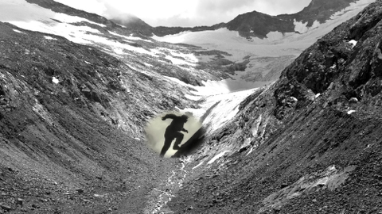

Stefanie Unruh

Stefanie Unruh * in Hamburg. Studium an der
Akademie der Bildenden Künste, München, und an der School of Visual
Arts, New York. Mitarbeit u.a. bei „Quivid“ für Kunst am Bau und
Kunst im öffentlichen Raum, München. Zahlreiche Auszeichnungen,
darunter Seerosenpreis der LH München, hausderkunst Preis,
Video-Installationspreis, Marl.
stefanie-unruh.de
Ausstellungen (u.a.): Switch to art, Neu-Ulm – Galerie Pfefferle, München – Galerie Pixma, Bozen – Kunstraum Bogenhausen (alle 2015) – Ratzinger Platz, München 2016 – Ich liebe Dich, ich hasse Dich 2017
Spiel-Berg
2016 – Video, Sound – 15'30''
Idee + K + Collage: Stefanie Unruh
Im Foto einer Berglandschaft spielen sich zeitversetzt in kleinen „Gucklöchern“ Bergdramen und Heimatfilme ab – zu sehen sind dramatische Szenen aus Arnold Fancks DIE WEISSE HÖLLE VOM PIZ PALÜ, Luis Trenkers DER BERG RUFT oder Paul Marcus' HEIDI. Aus der Collage der Filmschnipsel entsteht während des Betrachtens eine neue, fiktive Berg-Geschichte. Wenn das Spektakel vorbei ist, herrscht wieder Ruhe.